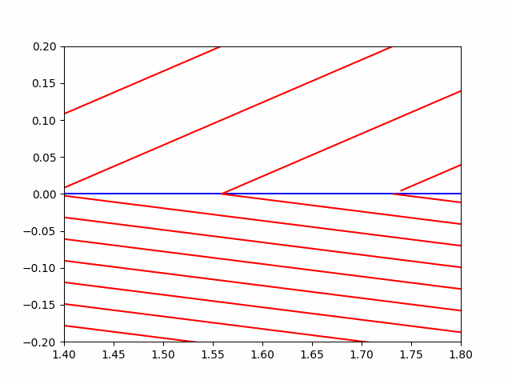

If there is one thing everyone has fantasised about at least once in their lives, it is the ability to be invisible. Not stealthy, not a social pariah, but transparent. Animals are some of the finest biological examples; although not true cloaking, they manage to hide in plain sight due to the color of their fur, which is the result of millions of years of evolution. But what if you could become totally see-through, making you literally invisible? Well, that’s exactly what metamaterials can do. They are capable of bending light around an object, making it impossible to see that object. Imagine wearing the invisibility cloak from the Harry Potter series, only this one is not magic but made of incredibly precise, manufactured materials. These materials are made of tiny structures that are smaller than the wavelength of light and can have a negative index of refraction, which makes them capable of manipulating the electromagnetic radiation that comes in contact with them. Using Einstein’s theory of relativity as a crux, we can calculate how light would bend in those materials, making it possible to bend all different frequencies of light, resulting in total invisibility. This idea is very well described by imagining a rock in the middle of a river. The water would flow around the rock and continue on its path.
M etamaterials are made of artificial structures composed of conventional materials like plastics and metals arranged in a certain "lattice". They are made from countless tiny structures that are smaller than the wavelength of the light that is incident on them, allowing the creator to control how electromagnetic waves bend around the object, making it impossible for light to interact with it in any way. These structures are called meta-atoms, and they’re "created" to specifically fit the metamaterial model. These meta-atoms have a negative index of refraction causing the light incident on them to bend in the opposite direction to that of normal materials. These meta-atoms are not real atoms but instead small structures that can be made from copper or split-ring resonators, which are made to interact with specific frequencies of light. To have a negative refractive index, the meta-atoms must exhibit both negative permittivity and negative permeability. Another form of such materials are photonic crystals and quasicrystals. They are a special type of crystal structure materials that maintain their symmetry in multiple planes, more than current crystallography rules allow for. They were first noticed in some alloys of aluminium and manganese, and they have quickly become a very interesting topic for physicists worldwide.
T o understand the physics of metamaterials, it is imperative to first understand the physics of Optics. The reason why we can see things around us is that electromagnetic radiation (light) bounces off the things around us and into our eyes. In that process, some specific wavelengths of light, due to the structure of the materials themselves, are absorbed while some are expelled. The ones absorbed never reach us, while the ones expelled are the ones entering our eyes. That’s why the colour of a pepper is green and not purple, because the cells of the pepper absorb all other wavelengths of light, BUT the green one. For an object to be colored black, the material of which the object is comprised absorbs all wavelengths of light, giving none of them back, whereas being coloured white means it absorbs no wavelengths and refracts all of them. Metametarials make it possible for the light to literally slip past the internal structure of the material, making it bounce off the objects around it and not the material itself. This is because of the negative index of refraction, which simply means that the light that is incident on the surface of the material refracts in the opposite direction from what it does for normal materials and therefore never reaches our eyes.
@articleWOOD2009379, title = Metamaterials and invisibility, journal = Comptes Rendus Physique, volume = 10, number = 5, pages = 379-390, year = 2009, note = Metamaterials, issn = 1631-0705, doi = https://doi.org/10.1016/j.crhy.2009.01.002, url = https://www.sciencedirect.com/science/article/pii/S1631070509000243, author = Ben Wood, keywords = Metamaterials, Invisibility, Cloaking, Métamatériaux, Invisibilité, Capes d’invisibilité,
